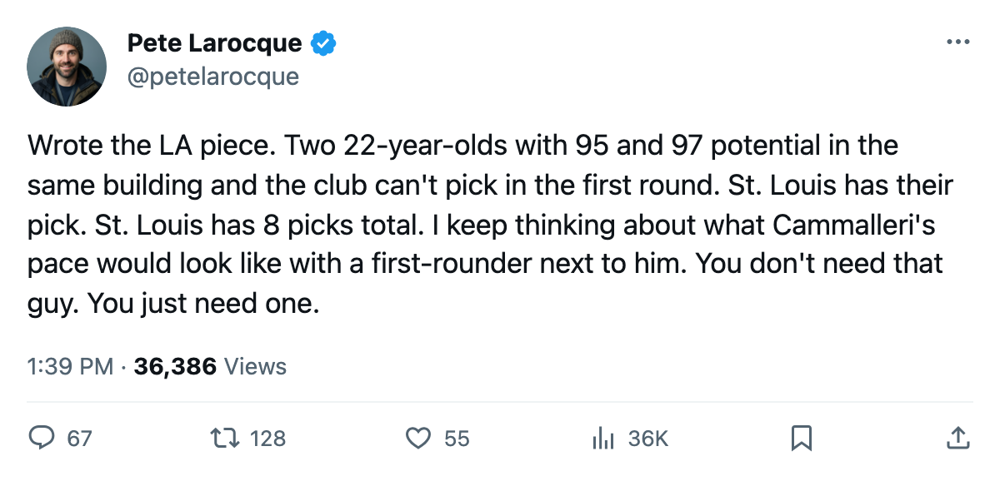
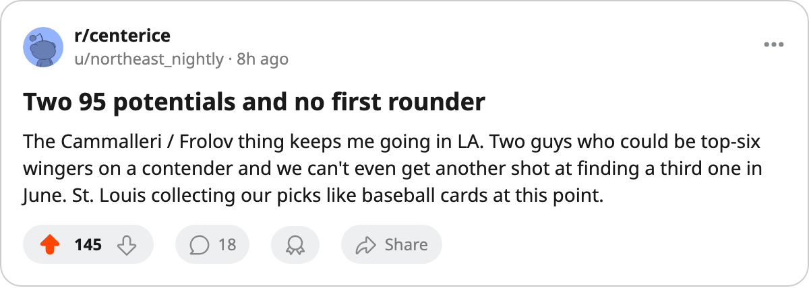

The Only Club Without a First Rounder Has Two Men With 95 Potential
Los Angeles has no first-round pick in June. It has Mike Cammalleri and Alexander Frolov, both 22, both rated by the Bureau in the league's top tier. Nobody else in the Pacific can say they have two and no capital to find a third.
 Pete LarocqueScouting editor · The Prospect File
Pete LarocqueScouting editor · The Prospect File
 Mike Cammalleri87 has 51 points in 52 games. He skates 20.4 minutes a night. The Bureau's Development Index has him up six from his base, which puts him in the same tier as
Mike Cammalleri87 has 51 points in 52 games. He skates 20.4 minutes a night. The Bureau's Development Index has him up six from his base, which puts him in the same tier as  Marian Gaborik99 and Mike Komisarek87. The Book gives him 97 potential.
Marian Gaborik99 and Mike Komisarek87. The Book gives him 97 potential.
He is 22 years old. His club has no first-round pick in June.
The league's worst June
Every other club in this 30-team league holds at least one first-round selection in the 2005 draft. Los Angeles holds none.  St. Louis Blues owns it, the fourth piece of inventory the
St. Louis Blues owns it, the fourth piece of inventory the  Los Angeles Kings front office has handed away since the last trade deadline. St. Louis now carries 8 picks, the most of any club. LA carries 4, tied for second fewest in the league with Dallas, Phoenix and three others, but those four clubs each still own a first-rounder. LA does not.
Los Angeles Kings front office has handed away since the last trade deadline. St. Louis now carries 8 picks, the most of any club. LA carries 4, tied for second fewest in the league with Dallas, Phoenix and three others, but those four clubs each still own a first-rounder. LA does not.
The Pacific Division as it stands on the morning after the trade deadline:
| Club | Points | Picks | Firsts |
|---|---|---|---|
 Dallas Stars Dallas Stars | 97 | 4 | 1 |
 Mighty Ducks of Anaheim Mighty Ducks of Anaheim | 87 | 5 | 1 |
 Phoenix Coyotes Phoenix Coyotes | 78 | 4 | 1 |
| Los Angeles Kings | 71 | 4 | 0 |
 San Jose Sharks San Jose Sharks | 65 | 5 | 1 |
LA is 23-33-9, 71 points, last in the division by 7 points over San Jose and 26 behind Dallas. The club has the same number of picks as Dallas and Phoenix but cannot add a top-end piece through June. It cannot tank into one. It has no route to a third elite young player except the trade market or free agency, both of which cost something this roster is already short on.
Two is not nothing
Cammalleri was the 49th pick in 2001, a second-rounder out of the OHL who now skates on the top line and the top power play unit for a 71-point club. His 51 points in 52 games sit him on the ledger beside players with far higher draft pedigrees. The Index has him up six, the Bureau's language for a young man whose overall grade reads six above what the Book said his base was before this season.
 Alexander Frolov79 was the 20th pick in 2000. He is 22 as well, 50 points in 53 games, 22.3 minutes a night. The Book gives him 95 potential, the same tier as
Alexander Frolov79 was the 20th pick in 2000. He is 22 as well, 50 points in 53 games, 22.3 minutes a night. The Book gives him 95 potential, the same tier as  Jay Bouwmeester83 and Alexander Frolov's own line-mate. His form is up three, below Cammalleri's six but still a player the Bureau believes is developing ahead of his base grade.
Jay Bouwmeester83 and Alexander Frolov's own line-mate. His form is up three, below Cammalleri's six but still a player the Bureau believes is developing ahead of his base grade.
Cammalleri at 97, Frolov at 95, both 22, both on the same roster, both on the top two lines. The Bureau's under-23 list has them at 79 and 74 overall respectively, which means neither is producing at the level the potential suggests yet. The potential is the Bureau's rating for likelihood of development. It says the ceiling is there. When it arrives is not a schedule this front office controls.
What the rest of the Pacific has
Dallas has Jason Bacashihua91 at 85 overall and 90 potential, though the goaltender has played 1 game. It has 4 picks including a first, and a Presidents' Trophy season at 97 points. Anaheim drafted Tuomas Lydman73 10th overall in June and has him at 68 games, 27 points, 17.8 minutes. San Jose has 5 picks and a first to spend on its rebuild at 65 points.
LA has Cammalleri and Frolov and 4 picks it cannot spend in the first round. The question through June is not whether this front office has young talent; it has two of the Bureau's highest-rated 22-year-olds in the league. The question is what it does when the next Cammalleri or Frolov is available at pick 12 or pick 18 and the club cannot reach the podium to collect him.

